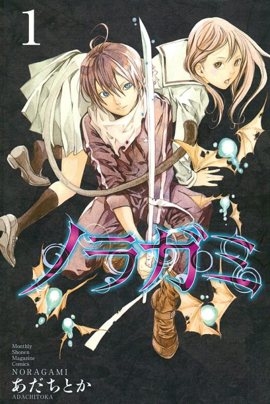

Noragami
After the anime, read the manga from Chapter 40.
Rate it or report where you stopped
Arcs
Episodes numbered continuously across both seasons: Noragami 1-12 and Aragoto 13-25 (OVAs unnumbered).
The Stray God
Yato, a minor god without a shrine, takes any job for five yen. After he saves schoolgirl Hiyori from a bus, her soul starts slipping out of her body, and she pesters him to fix it.
Yukine's Blight
An old enemy comes after Yato just as Yukine's resentment over being dead starts to poison his master.
Rabo
An anime-original finale in which a figure from Yato's bloody past resurfaces.
Bishamon
Bishamon's family of regalia begins to crack under a traitor's schemes, pulling Yato's group into her tragic history.
Ebisu and the Underworld
The god of fortune Ebisu takes an interest in Yukine, while Yato's mysterious father pulls strings behind the scenes.